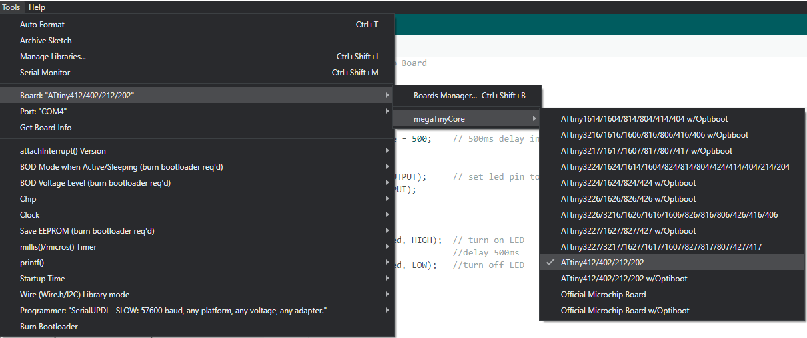
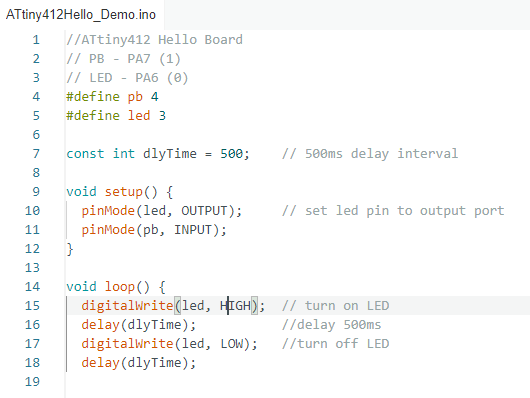

Topics Covered
Library Installation
Before we can program our ATtiny412 hello-world board in Arduino, we need to first install a library that can read the board.
We will be using the ATTinyCore by Spence Konde. The link to the library can be found here.
To install the library follow these steps.
Step 1: Copy the boards manager url and paste it ibto the "Additional Boards Manager URLs"
Step 2: Open the board manager. (Tools > Boards > Boards Manager)
Step 3: Find and install "ATTinyCore by Spence Konde". Ensure it is the latest version.
Step 4: Select ATtiny412 without Optiboot
And now we are ready to start programming our board!
Programming Demo
We are going to do a simple demo to make sure that our hello-world board works! Run a simple code like the following.
To run the code to our board we would need to use "upload Using Programmer" (found under "Sketch").
Problems I Faced
My board was faulty and Mr Steven Chew kindly helped me to figure out the issues as I didnt know what was wrong. After replacing both the MCU and the led I finally had a working board!